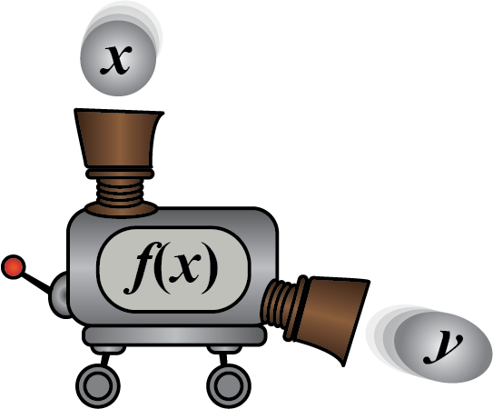
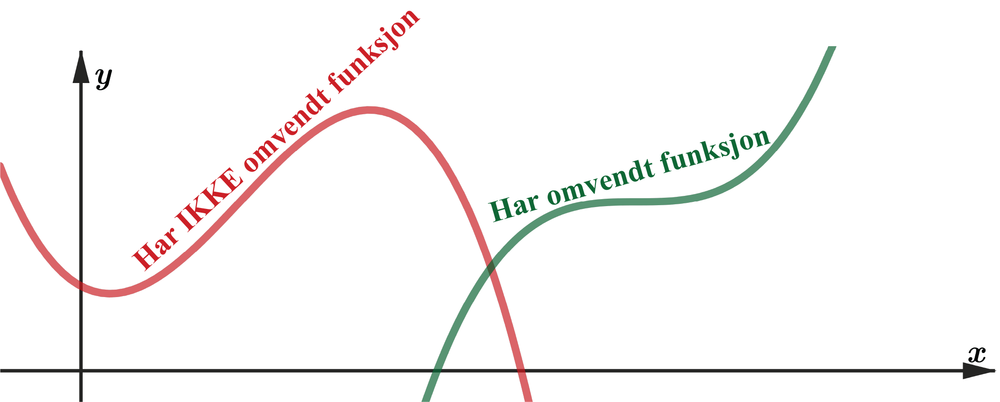
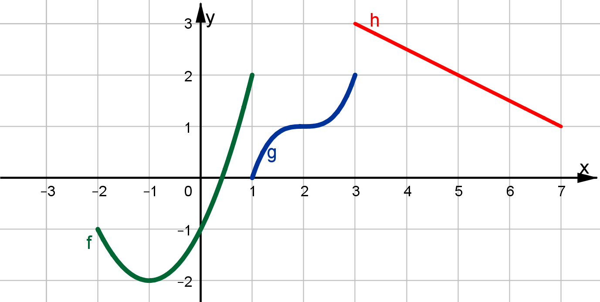
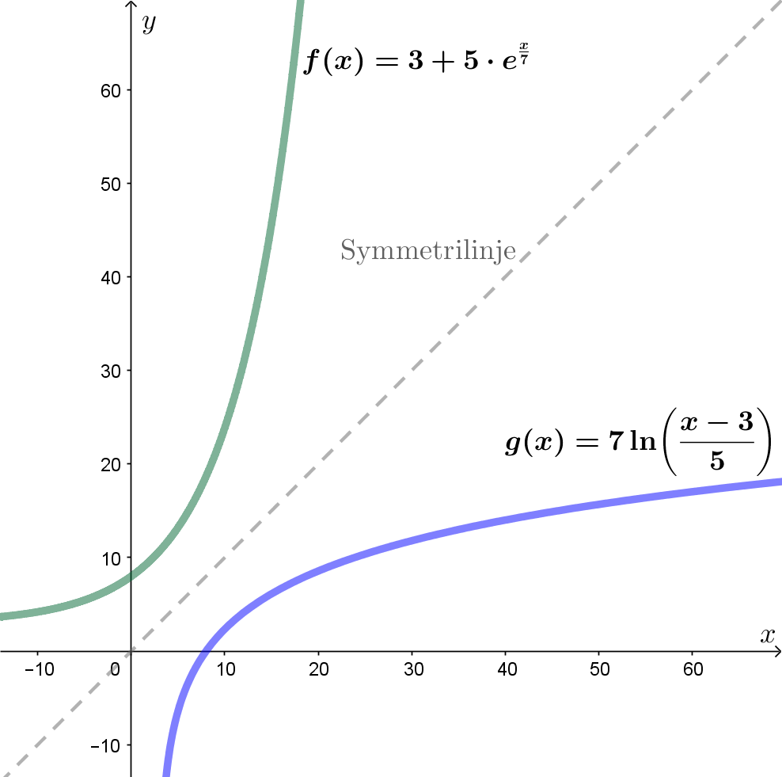
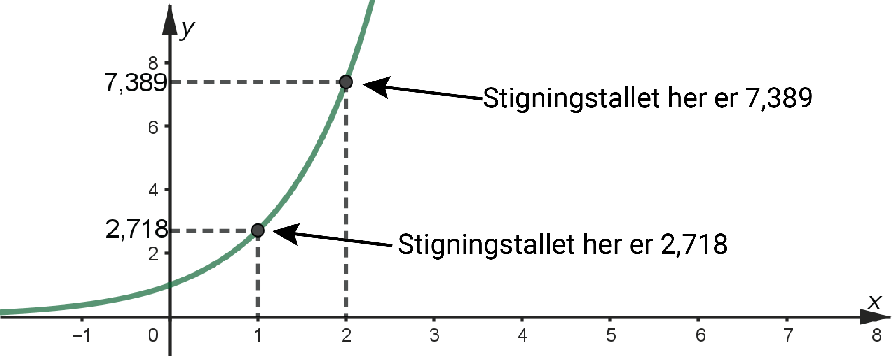

Potensregning, omvendte funksjoner og logaritmer
Du skal ha kompetanse om
- grunnleggende regning
- regneregler for potenser
- omvendte funksjoner
- logaritmer
- regneregler for logaritmer
- eksponentialligninger og logaritmeligninger
Potensregning
Potens
\(a\) opphøyd i \(n\) betyr at \(a\) skal multipliseres med seg selv \(n\) ganger.
\[ a^n = a \cdot a \cdot a \cdot a \cdots a \]Potensregneregler
\[ \begin{aligned} a^n \cdot a^m &= a^{m+n} & \frac{a^m}{a^n} &= a^{m-n} \\ \color{gray}{2^3 \cdot 2^4} &\color{gray}{= 2^7} & \color{gray}{\frac{2^7}{2^3}} &\color{gray}{= 2^4} \\ a^0 &= 1 & a^{-n} &= \frac{1}{a^n} \\ \color{gray}{3^0} &\color{gray}{= 1} & \color{gray}{3^{-2}} &\color{gray}{= \frac{1}{3^2}} \\ \left(a^n\right)^m &= a^{m\cdot n} & \sqrt{a^n} &= a^{\frac{n}{2}} \\ \color{gray}{\left(2^3\right)^4} &\color{gray}{= 2^{12}} & \color{gray}{\sqrt{5^4}} &\color{gray}{= 25} \\ \left(a\cdot b\right)^n &= a^n\cdot b^n & \left(\frac{a}{b}\right)^n &= \frac{a^n}{b^n} \\ \color{gray}{\left(2\cdot3\right)^2} &\color{gray}{= 4\cdot9} & \color{gray}{\left(\frac{2}{3}\right)^2} &\color{gray}{= \frac{4}{9}} \end{aligned} \]Eksempel
\[ \frac{(2a)^{-1} \cdot \left(2^3a^2\right)^2}{\left(2^{-2}a^3\right)^{-2}} = \frac{2^{-1}\cdot a^{-1}\cdot2^6\cdot a^4}{2^4\cdot a^{-6}} = 2^{-1+6-4}\cdot a^{-1+4+6} = 2a^9 \]Regnerekkefølge
Paranteser - potenser - multiplikasjon/divisjon - pluss/minus
Eksempel
\[ (3+4)^2 - 2\cdot3^2 = 7^2 - 2\cdot9 = 49 - 18 = 31 \]Funksjoner og omvendte funksjoner
Omvendte funksjoner
Dersom \(f\) og \(g\) er omvendte funksjoner, har de motsatte/omvendte \(x\)- og \(y\)-verdier, slik at
\[ f(x)=y \;\;\;\text{ gir }\;\;\; g(y)=x \]Dersom \(f\) og \(g\) er omvendte funksjoner gjelder også
\[ f(g(x))=x \;\;\;\; \text{ og } \;\;\;\; g(f(x))=x \]Eksempel
Eksempler på omvendte funksjoner:
\[ \begin{aligned} f(x) &= x^2 \text{ og } g(x)=\sqrt{x} \text{ fordi } f(g(x))=(\sqrt{x})^2=x \\ f(x) &= 2x \text{ og } g(x)=\frac{x}{2} \text{ fordi } f(g(x))=2\left(\frac{x}{2}\right)=x \end{aligned} \]En funksjon er en slags maskin som forvandler \(x\)-verdier til \(y\)-verdier.
Hver \(x\)-verdi gir én \(y\)-verdi.

Siden hver \(x\)-verdi bare skal gi én \(y\)-verdi, kan ikke en funksjon som skal ha en omvendt funksjon ha flere \(x\)-verdier for samme \(y\)-verdi:

Omvendte funksjonener er speilsymmetriske rundt linja \(y=x\).

Eksempel
Hvilke av funksjonene har en omvendt funksjon?
Bestem definisjon- og verdimengden til de omvendte funksjonene.

\(f(x)\) har ikke en omvendt funksjon.
\(g(x)\) har en omvendt funksjon med \(x\in[0,2]\) og \(V_g=[1,3]\).
\(h(x)\) har en omvendt funksjon med \(x\in[1,3]\) og \(V_h=[3,7]\).
For å finne funksjonsuttrykket til den omvendte funksjonen løser vi likningen for funksjonen med hensyn på \(x\).
Eksempel
Bestem funksjonsuttrykket til den omvendte funksjonen til
\[ f(x)=3+5\cdot e^{\frac{x}{7}} \]Den omvendte funksjonen er dermed
\[ g(x)=7\ln\left(\frac{x-3}{5}\right) \]
Eulertallet
Eulertallet
\[ e=\lim_{n\rightarrow\infty}\left(1+\frac{1}{n}\right)^n=2\text{,}71828\ldots \]Eulertallet er en viktig konstant, litt på samme måte som \(\pi=3,14159265\ldots\)
Den viktigste egenskapen til \(e\) er at stigningstallet til \(f(x)=e^x\) er det samme som funksjonsverdien.

Den deriverte av \(e^x\)
\[ \left(e^x\right)'=e^x \]Eksempel
Funksjonen \(f\) er gitt ved \(f(x)=5e^x\).
Bestem \(f'(x)\), \(f'(0)\) og \(f'(1)\).
Derivasjonsregelen gir
\[ f'(x)=5e^x \;\;\;,\;\;\; f'(0)=5e^0=5 \;\;\;,\;\;\; f'(1)=5e^1=5e\approx13,6 \]Logaritmer
Den Briggske logaritmen
Den Briggske logaritmen
\(f(x)=\log x\) er den omvendte funksjonen til \(g(x)=10^x\).
\(\log a\) er det vi må opphøye 10 i for å få \(a\).
\[ 10^{\log a}=a \;\; \text{ og } \;\; \log 10^a=a \]Den Briggske logaritmen kalles også 10'er-logaritmen. Dette er en funksjon som sier hva 10 må opphøyes i for å få tallet vi legger inn i funksjonen.
\[ \begin{aligned} \log 1 &= 0 \;\; \text{ fordi } \;\; 10^0=1 \\ \log 10 &= 1 \;\; \text{ fordi } \;\; 10^1=10 \\ \log 100 &= 2 \;\; \text{ fordi } \;\; 10^2=100 \\ \log 300 &\approx 2\text{,}48 \;\; \text{ fordi } \;\; 10^{2\text{,}48}\approx300 \end{aligned} \]Den binære logaritmen
Den binære logaritmen
\(f(x)=\log_2 x\) er den omvendte funksjonen til \(g(x)=2^x\).
\(\log_2 a\) er det vi må opphøye 2 i for å få \(a\).
\[ 2^{\log_2 a}=a \;\; \text{ og } \;\; \log_2 2^a=a \]Den binære logaritmen kalles også 2'er-logaritmen. Dette er en funksjon som sier hva 2 må opphøyes i for å få tallet vi legger inn i funksjonen.
\[ \begin{aligned} \log_2 1 &= 0 \;\; \text{ fordi } \;\; 2^0=1 \\ \log_2 2 &= 1 \;\; \text{ fordi } \;\; 2^1=2 \\ \log_2 4 &= 2 \;\; \text{ fordi } \;\; 2^2=4 \\ \log_2 8 &= 3 \;\; \text{ fordi } \;\; 2^3=8 \end{aligned} \]Den naturlige logaritmen
Den naturlige logaritmen bruker Euler-tallet \(e\approx2,71828\) som grunntall.
Den naturlige logaritmen
\(f(x)=\ln x\) er den omvendte funksjonen til \(g(x)=e^x\).
\(\ln a\) er det vi må opphøye \(e\) i for å få \(a\).
\[ e^{\ln a}=a \;\; \text{ og } \;\; \ln e^a=a \]Figuren nedenfor oppsummerer de tre logaritmefunksjonene vi har sett på.

Legg merke til at
\[ \log 10=\ln e=\log_2 2=1 \;\;\; \text{ og } \;\;\; \log 1=\ln 1=\log_2 1=0 \]Logaritmeregler
Regneregler for logaritmer
\[ \begin{aligned} \log a^n &= n\cdot\log a \\ \log(a\cdot b) &= \log a+\log b \\ \log\left(\frac{a}{b}\right) &= \log a-\log b \end{aligned} \]Eksempel
Skriv så enkelt som mulig.
\[ \log 8+\log 6+\log\left(\frac{1}{9}\right) \]Vi kan faktorisere og bruke reglene:
\[ \begin{aligned} \log 8+\log 6+\log\left(\frac{1}{9}\right) &=\log(2^3)+\log(2\cdot3)+\log\left(\frac{1}{3^2}\right)\\ &=3\cdot\log2+\log2+\log3+\log1-\log3^2\\ &=3\cdot\log2+\log2+\log3+0-2\log3\\ &=4\cdot\log2-\log3 \end{aligned} \]En alternativ måte å løse oppgaven på er å slå sammen uttrykket:
\[ \log8+\log6+\log\left(\frac{1}{9}\right)=\log\left(8\cdot6\cdot\frac{1}{9}\right)=\log\left(\frac{16}{3}\right) \]NB: De to løsningene i eksempelet ovenfor er (selvsagt) like, men skrevet på to forskjellige måter:
\[ \log\left(\frac{16}{3}\right)=\log16-\log3=\log2^4-\log3=4\log2-\log3 \]Logaritme- og eksponentialligninger
Logaritmelikninger
Eksempel
Løs likningen
\[ \log(x-4)+1=3 \]Vi får først \(\log(\ldots)\) alene, og tar deretter "ti opphøyd i" på begge sider for å kvitte oss med \(\log\),
\[ \begin{aligned} \log(x-4)&=2\\ 10^{\log(x-4)}&=10^2\\ x-4&=100\\ x&=104 \end{aligned} \]Eksempel
Løs likningen
\[ (\ln x)^2-\ln x^5=-6 \]Dette er en andregradslikning! Hvis vi setter \(\ln x=u\), kan likningen skrives om:
\[ \begin{aligned} (\ln x)^2-5\ln x+6&=0\\ u^2-5u+6&=0\\ (u-2)(u-3)&=0\\ u&=2 \;\;\vee\;\; u=3\\ \ln x&=2 \;\;\vee\;\; \ln x=3\\ e^{\ln x}&=e^2 \;\;\vee\;\; e^{\ln x}=e^3\\ x&=e^2 \;\;\vee\;\; x=e^3 \end{aligned} \]Eksponentiallikninger
Eksempel
Løs likningen
\[ 2^x-4=20 \]Først ordner vi likningen slik at vi får \(2^x\) alene. For å "hente ned" \(x\)'en fra eksponenten, tar vi logaritemen på begge sider,
\[ \begin{aligned} 2^x&=24\\ \log_2 2^x&=\log_2 24\\ x\cdot\log_2 2&=\log_2 24\\ x&=\log_2 24 \approx 4\text{,}6 \end{aligned} \]Eksempel
Løs likningen
\[ 9^x-3\cdot3^x=4 \]Dette er en andregradslikning, fordi \(9^x=3^{2x}=3^{x\cdot2}=(3^x)^2\).
Hvis vi setter \(3^x=u\), kan likningen skrives om til
\[ \begin{aligned} u^2-3u-4&=0\\ (u-4)(u+1)&=0\\ u&=4 \;\;\vee\;\; u=-1\\ 3^x&=4 \;\;\vee\;\; 3^x=-1 \end{aligned} \]Det finnes ingen \(x\) som gjør at \(3^x\) blir negativ, så løsningen er
\[ \begin{aligned} 3^x&=4\\ \ln3^x&=\ln4\\ x\cdot\ln3&=\ln4\\ x&=\frac{\ln4}{\ln3} \approx 1\text{,}26 \end{aligned} \]som også kan skrives som \(x=\log_3 4\).